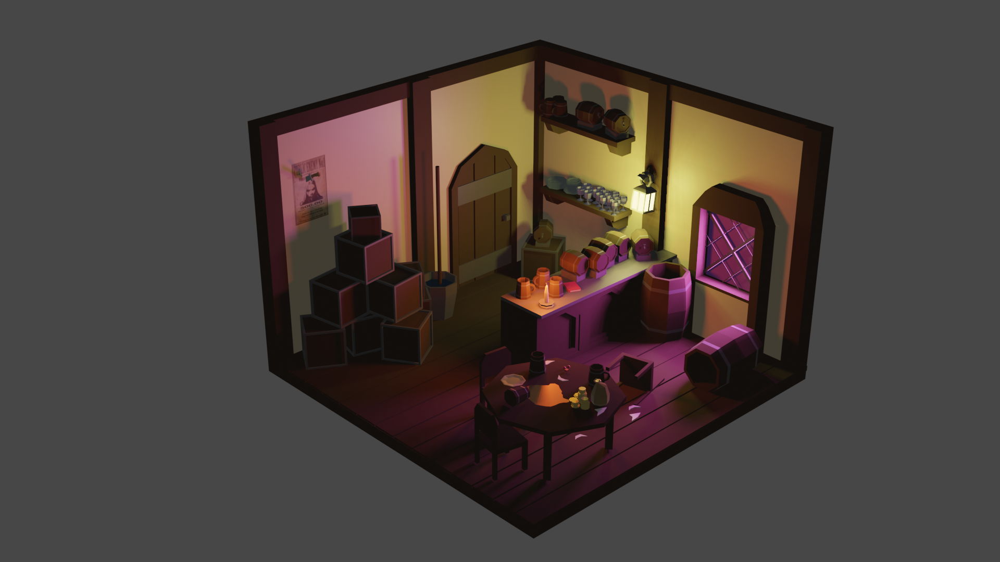

This bar was a more recent work of mine, inspired by a Dungeons and Dragons campaign. It was one of my first expeditions into clutter in an environment and how to make it appropriate for the setting while also being easily understood by the viewer. It was also one of my first times attempting to use different light sources to add depth and character to a piece.